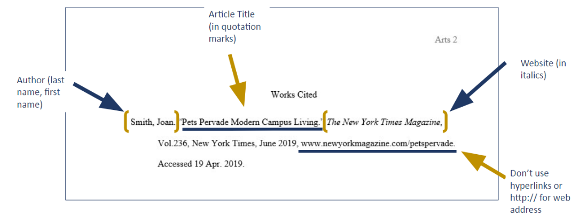
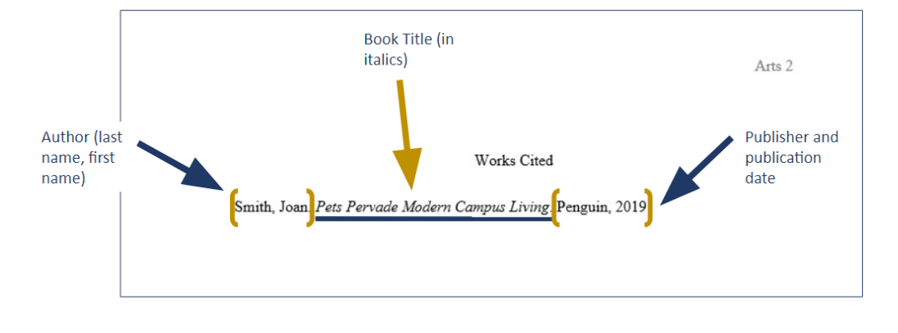
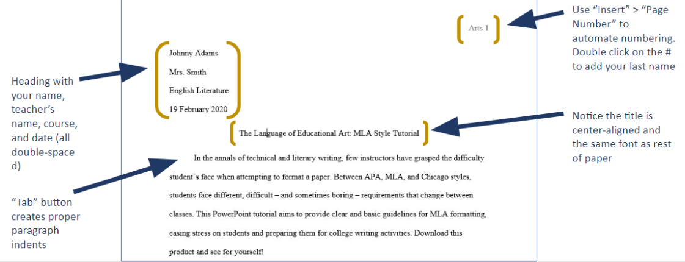
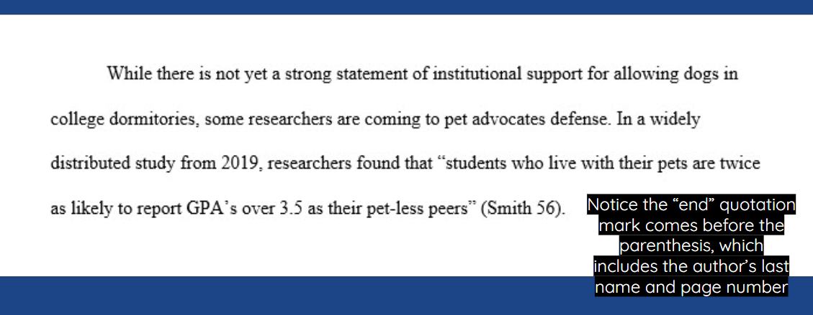
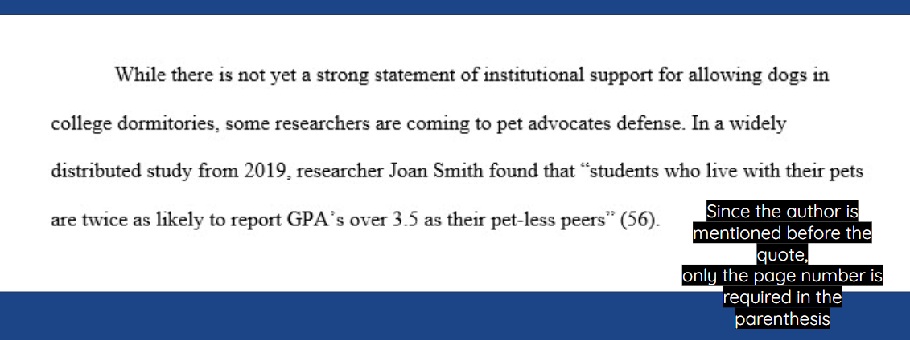

MLA Formatting
|
Purposes for Using MLA Formatting
- Cross-referencing allows readers to locate the publication information of source material.
- This is of great value for researchers who may want to locate your sources for their own research projects.
- Using a consistent format helps your readers understand your arguments and the sources they’re built on.
- It also helps you keep track of your sources as you build arguments.
- The proper use of MLA style shows the credibility of writers; such writers show accountability to their source material.
- Proper citation of your sources in MLA style can help you avoid plagiarism, which is a serious offense.
- It may result in anything from failure of the assignment to expulsion from school.
|
MLA stands for the Modern Languages Association.
|
|
Where to Find MLA Rules |
- Purdue Owl
- Templates on course website
- www.mla.org
- www.workscited4u.com
- An English teacher
- MLA Handbook for Writers of Research Papers, 6th ed.
Sample Works Cited Page
|
Components of Works Cited Page |
|
Most citations should contain the following basic information:
|
Accordion
Example of Works Cited: Book, Magazine Article & Web Page
Book
- Byatt, A. S. Babel Tower. New York: Random House, 1996.
Article in a Magazine
- Klein, Joe. “Dizzy Days.” The New Yorker 5 Oct. 1998: 40-45.
Web page
- Poland, Dave. “The Hot Button.” Roughcut. 26 Oct. 1998. Turner Network Television. 28 Oct. 1998 <www.roughcut.com>.
Example of Works Cited: Newspaper Article, Unauthored Source & Interviews
A newspaper article
- Tommasini, Anthony. “Master Teachers Whose Artistry Glows in Private.” New York Times 27 Oct. 1998: B2.
A source with no known author
- “Cigarette Sales Fall 30% as California Tax Rises.” New York Times 14 Sept. 1999: A17.
A TV interview
- McGwire, Mark. Interview with Matt Lauer. The Today Show. NBC. WTHR, Indianapolis. 22 Oct. 1998.
A personal interview
- Mellencamp, John. Personal interview. 27 Oct. 1998.
|
Setting Up the Works Cited Page
|


These are used when quoting any words that are not your own.
- Quoting means to repeat another source word for word, using quotation marks.
When summarizing facts and ideas from a source
- Summarizing means to take ideas from a large passage of another source and condense them, using your own words.
When paraphrasing a source.
- Paraphrasing means using ideas from another source but changing the phrasing into your own words.
- Readability:
- Keep references brief.
- Give only the information needed to identify the source of your
- Works Cited page.
- Do not repeat unnecessary information.
- MLA Style requires sources to be cited parenthetically within the paper.
- The standard appearance of a citation is to have the author’s last name and source quote page number included in parentheses after the quotation mark but before the punctuation: “…sadness” (Smiley 45).
- However, if you include the author’s name earlier in the paragraph, or have a source without page numbers, you will need to cite differently.
Common Types of Parenthetical Citations
Accordion
Author’s last name and page number(s)
- The author’s last name and page number(s) of the quotation must appear in the text
Romantic poetry is characterized by the “spontaneous overflow of powerful feelings” (Wordsworth 263).
Wordsworth stated that Romantic poetry was marked by a “spontaneous overflow of powerful feelings” (263).
Sometimes More Information is Necessary
More than one author with the same last name
- (W. Wordsworth 23); (D. Wordsworth 224)
More than one work by the same author
- (Joyce, Portrait 121); (Joyce, Ulysses 556)
Different volumes of a multivolume work
- (1: 336)
Citing indirect sources
- (Johnson qtd. in Boswell 2:450)
Special Situations
If the source has no known author, then use an abbreviated version of the title:
- Full Title: “California Cigarette Tax Deters Smokers”
- Citation: (“California” A14)
If the source is only one page in length or is a web page with no apparent pagination:
- Source: Dave Poland’s “Hot Button” web column
- Citation: (Poland)
Handling Long Quotations
David becomes identified and defined by James Steerforth, a young man with whom David is acquainted from his days at Salem House. Before meeting Steerforth, David accepts Steerforth’s name as an authoritative power:
There was an old door in this playground, on which the boys had a custom of carving their names. . . . In my dread of the end of the vacation and their coming back, I could not read a boy’s name, without inquiring in what tone and with what emphasis he would read, “Take care of him. He bites.” There was one boy—a certain J. Steerforth—who cut his name very deep and very often, who I conceived, would read it in a rather strong voice, and afterwards pull my hair. (Dickens 68)
For Steerforth, naming becomes an act of possession, as well as exploitation. Steerforth names David for his fresh look and innocence, but also uses the name Daisy to exploit David's romantic tendencies (Dyson 122).
|
Formatting the Paper Based on MLA
|



- In the case of many digital resources, there may not be page numbers associated with a source
- In these instances, forego including a page number in the citation and instead use the first available of the following: author’s last name, article name, or website name
Article titles should be included with quotations: (“President Backs Initiative”)
Never include a full URL (http://www.google.com) in a parenthetical citation
For passages that are longer than 4-lines of text:
- Omit quotation marks
- Start passage on a new line
- Indent the entire quote ½ inch from the left
- Maintain double-spacing and font size
- Place parenthetical citation after passage’s closing punctuation